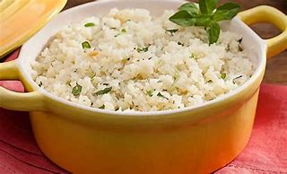
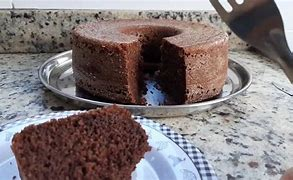
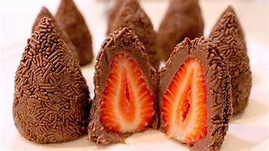

Arroz com couve flor:
- Arroz
- Couve-flor
- Cebola Média
- Azeite
Deixe a couve-flor picada. Adicione os igredientes e refogue bem. Adicione sal tampe a panela e deixe cozinhar.
Bolo de café
- Farinha de trigo
- Àçucar
- Café coado
- Chocolate em pó
- Ovos
Bata o açucar, as gemas eo café. Adicione a farinha e o chocolate e mexa bem. Bata as claras e junte a mistura.
Coxinha de brigadeira
- Leite Condensado
- Chocolate em pó
- Manteiga
- Morango
- Chocolate granulado
Junte o leite condensado, o chocolatte em pó e a manteiga. Aqueça no fogo baixo. Envolva os morangos e passe no granulado.